Sobrevivência · Exploração · Interplanetário
WhereWe Live
Um mundo entre planetas, luas e sistemas estelares. Pilote naves construídas bloco a bloco, monte sua base, negocie nas feitorias e entrepostos e sobreviva — sozinho ou com amigos.

Um mundo entre planetas, luas e sistemas estelares. Pilote naves construídas bloco a bloco, monte sua base, negocie nas feitorias e entrepostos e sobreviva — sozinho ou com amigos.
Fuselagem, asas e rampas: esta Andorinha foi desenhada no gerador de blueprints e é feita só dos mesmos blocos que você usa no jogo. Monte a sua do zero ou parta de uma pronta de pátio — e edite direto nela sempre que estiver estacionada.

Os propulsores de hidrogênio funcionam no planeta e no espaço. Cada nave tem peso, empuxo e consumo: quanto mais grande e mais carregada, mais propulsor ela pede.

O núcleo de nave é o que transforma uma estrutura em nave. Em volta dele trabalham gerador, baterias, giroscópio e tanque — a energia, a estabilidade e o combustível de que o voo depende.

Console, bancos e janelas amplas. Suba a rampa, sente e decole do pátio da feitoria, cruze a atmosfera e chegue ao espaço.

A broca de nave extrai minério a partir da própria nave, sem você precisar descer. Pouse perto do veio, ligue a broca e veja o material chegar.

Com tudo no lugar, a nave leva você para onde quiser. O Motor de dobra, abastecido com cristais colhidos nos planetas, leva a nave inteira — com a tripulação e os veículos travados — para outro sistema estelar.

Where We Live mistura construção livre, pilotagem e sobrevivência em sistemas estelares inteiros, com planetas de verdade que você percorre a pé, de carro ou de nave.
Paredes, rampas, janelas finas, portas, propulsores e estações. Monte bases e naves peça por peça — e edite a nave direto, com ela estacionada. O que você constrói sob o seu núcleo volta inteiro para a mochila.
Decole do pátio de uma feitoria, cruze a atmosfera e chegue ao espaço. Cada nave tem peso, empuxo e combustível ou energia — e leva o seu carro no convés.
Terreno voxel gerado na GPU: montanhas, praias, cavernas e pedras de minério que você extrai com o laser. Cada mundo tem clima, flora, ar e perigos próprios.
Preços que sobem e descem por local, lojas de verdade, contratos e reputação com as facções. Fabrique, venda, melhore — e garimpe sucata nos ferros-velhos.
Jogue em mundo próprio ou entre em servidores com amigos. Hospede o seu com o Servidor Dedicado e leve sua base e sua nave junto.
Oxigênio, fome, estamina, armadura e armas. Sem ar lá em cima, leve um gerador de O₂ — e um leito médico para voltar para casa. Longe dos locais habitados, os bichos atacam.
Capturas reais, tiradas no próprio jogo. Toque para ampliar.
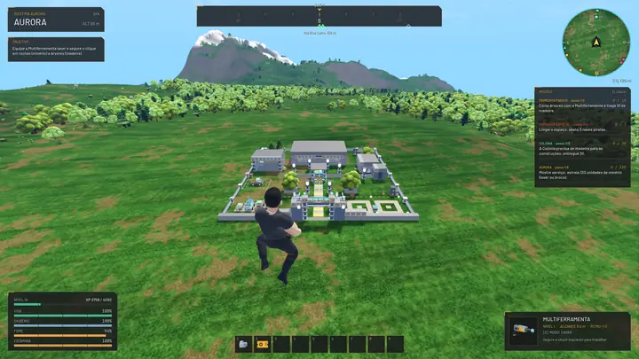
Locais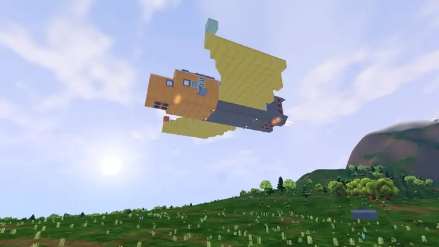
Naves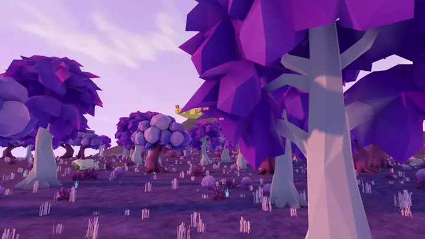
Malva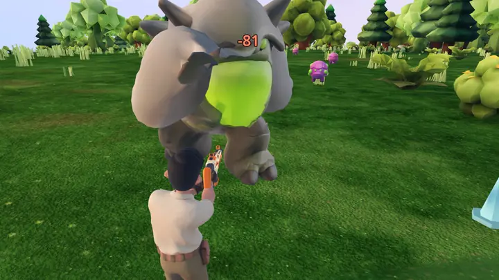
Fauna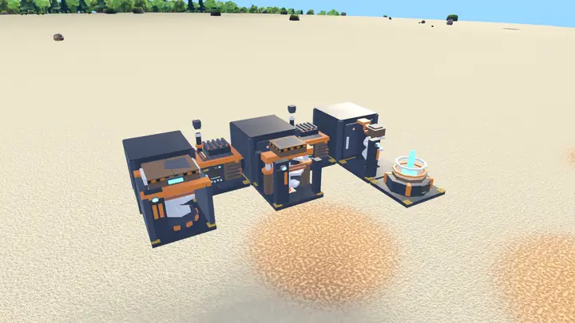
Base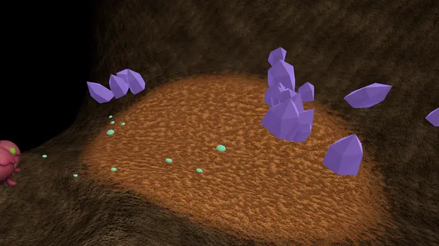
Cavernas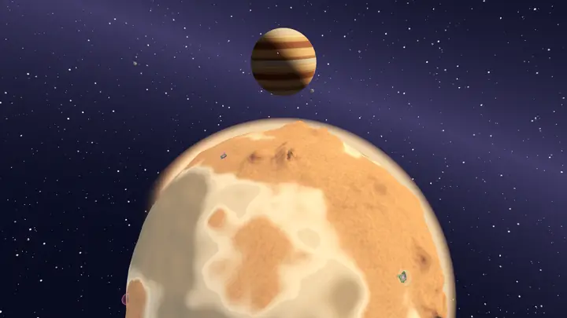
Espaço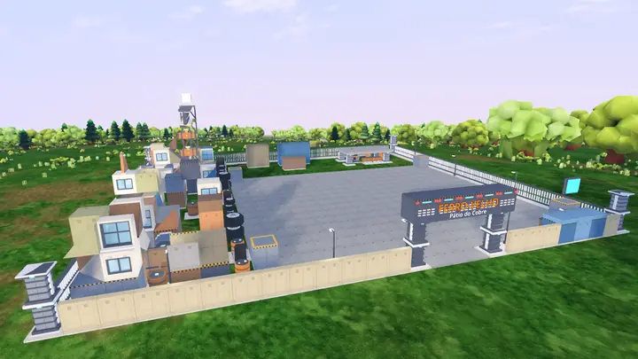
Ferro-velho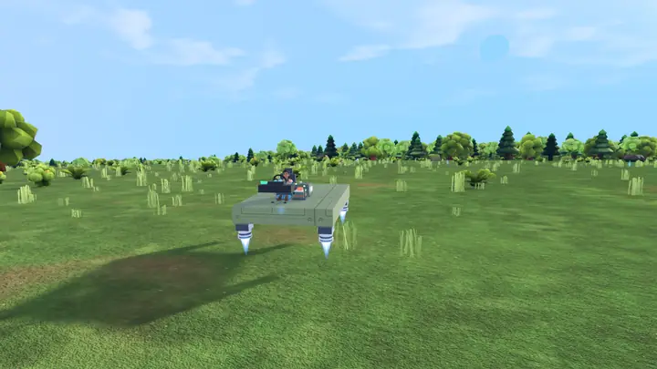
Veículos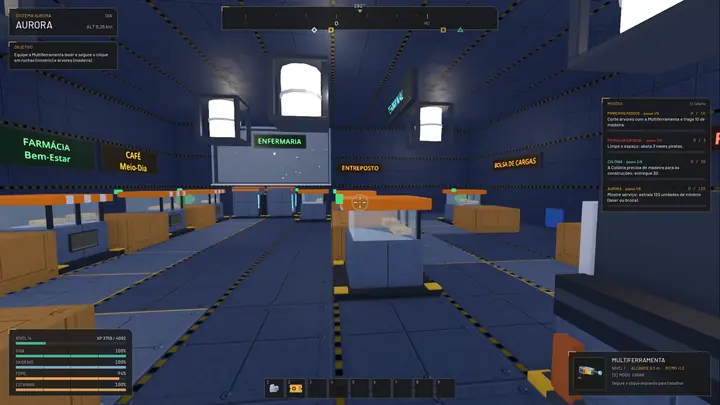
Estações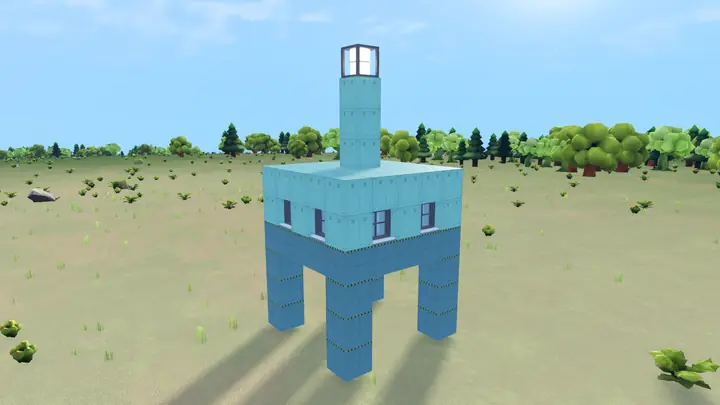
Aço, vidro, rampas, escadas, portas, pistões, rotores, dutos e esteiras. Tudo é bloco, e tudo tem peso, vida e função: o que você monta é o que voa, roda ou aguenta o tranco.
Uma ferramenta nossa, fora do jogo: você pede uma nave, um carro ou uma criatura por texto ou por imagem, e ela devolve um projeto montado bloco a bloco, só com as peças reais do jogo.
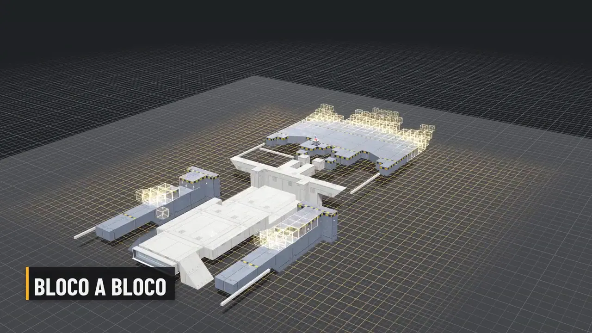
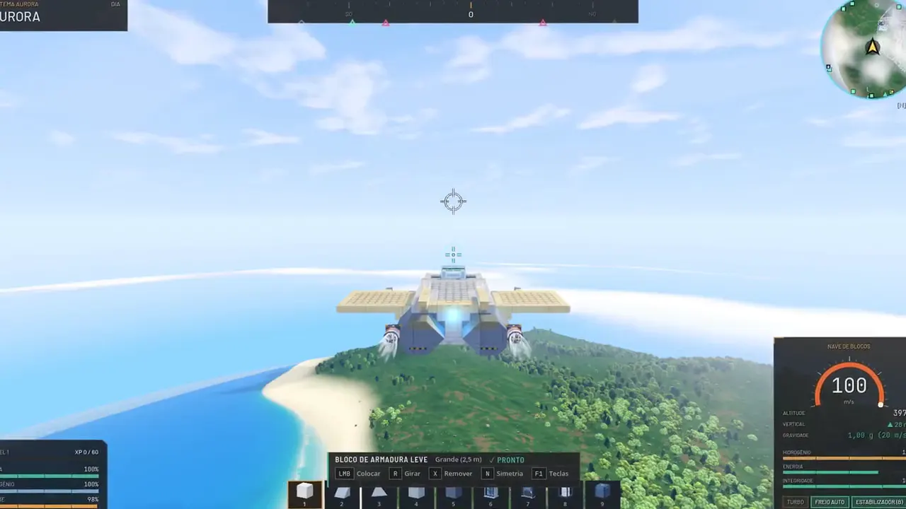
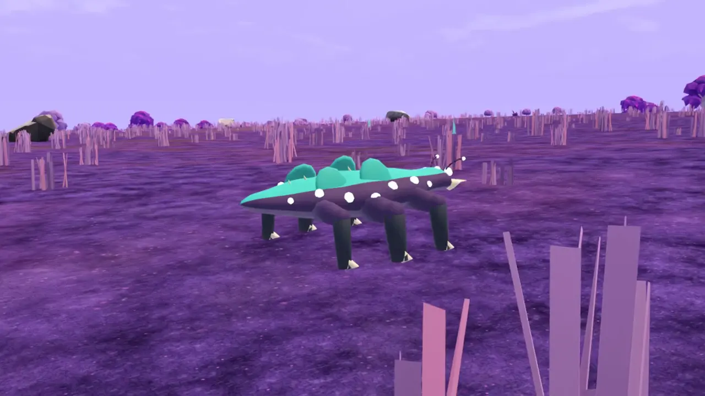
Planetas, luas e asteroides, cada um com clima, ar, flora, minérios e perigos próprios. Chegue pela dobra e siga voando.
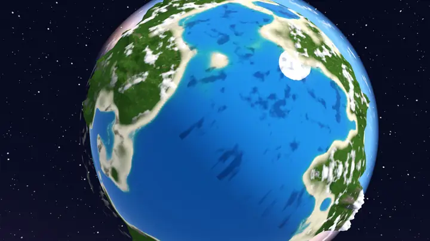
Onde tudo começa: um planeta temperado de mares, florestas, feitorias e o primeiro pátio de naves.
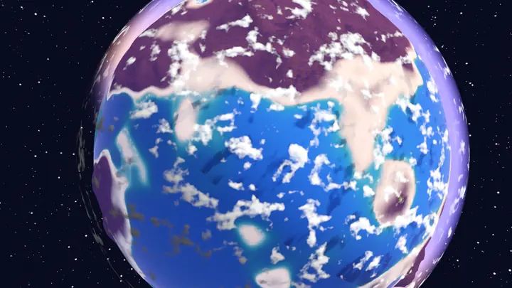
O planeta roxo: capim lilás, árvores de copa violeta, feitorias a céu aberto e outros locais para explorar.
Desertos de areia, tempestades, luas, asteroides e um gigante gasoso: mais de uma dúzia de corpos só no Ônix.
Novidade da versão 1.0.504: os povoados deram lugar a feitorias, portos, colônias, clareiras, fortins corsários e complexos abandonados, além dos saguões das estações. Cada mundo tem lugares para visitar, comerciar e explorar.
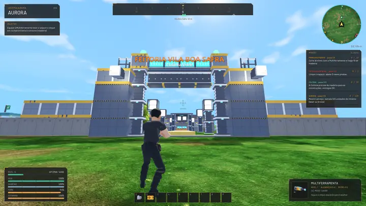
Postos de comércio com loja de verdade: letreiro, vendedor atrás do balcão, missões diárias, patrulhas e contratos. O Entreposto compra e vende de tudo um pouco.
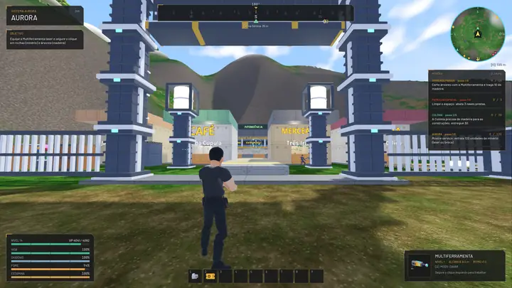
Colônias vivem de plantar e fabricar; as manufaturas fazem peças em escala e compram o seu material.
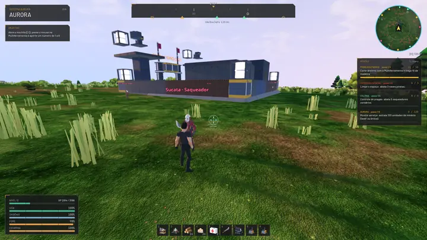
Território dos Corsários da Sucata: muralha, portão e patrulha. Entre sob risco; o Porto corsário comercia com quem tem reputação.
Dentro das estações no espaço ficam lojas, entreposto, enfermaria e terminal, tudo em gravidade zero.
Compre uma ficha, receba uma unidade incompleta sorteada e decida: desmontar e vender o material, ou reconstruir e registrar o chassi com o Vistoriador.
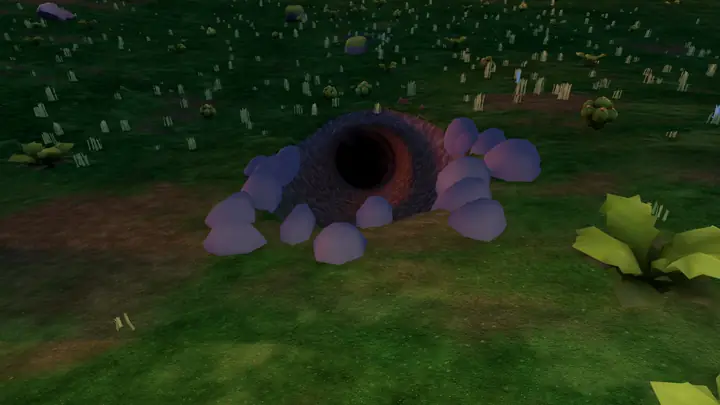
Bocas de caverna espalhadas pelos planetas levam a salões de cristal, fungos e minério raro. Lanterna ligada e cuidado com o que vive lá embaixo.
Câmera mais perto com a arma na mão, tiro que sai do cano, luneta nos rifles, acerto confirmado pelo servidor e aviso da direção do dano. Com arma branca, a defesa vale contra os soldados — e aparar no tempo certo dá o troco.

Personagem masculino ou feminino, com três trajes de modelo próprio — Macacão colonial, Traje reforçado e Traje espacial — e editor de cores para pele, olhos, cabelo e traje. E três companheiros que ninguém consegue machucar.

Nos mares de Aurora, Gelo e Malva há algas, corais e rochas submersas, cardumes, medusas, arraias e tartarugas. Nade para onde você olha e leve a Arpoeira, a arma feita para o mar.

A Boca-de-lodo dorme enterrada no fundo e acorda se você chegar perto. A Sombra-d’água, uma serpente translúcida de 7 m, ronda as águas profundas. Os dois têm corpo articulado e, em Gelo e Malva, mudam de cor.
Materiais, blocos, receitas, naves, veículos e planetas: cada item com o seu ícone do jogo, como obter ou fabricar e onde aparece. Gerada direto do código do jogo, sempre atualizada.
Abrir a WikiClique em “Baixar para Windows” e salve o instalador Instalar_WhereWeLive.exe.
Execute e escolha a pasta. Se o Windows avisar, clique em Mais informações → Executar assim mesmo: o instalador ainda não é assinado.
Abra pelo atalho da área de trabalho. O jogo confere as novidades e se atualiza sozinho a cada abertura.
Instalador em português, atualização automática a cada abertura e suporte no nosso Discord.
Baixar para WindowsBaixe, construa sua primeira nave e descubra onde você vai viver. E passe no nosso Discord para achar gente para jogar, mostrar suas construções e contar o que achou.